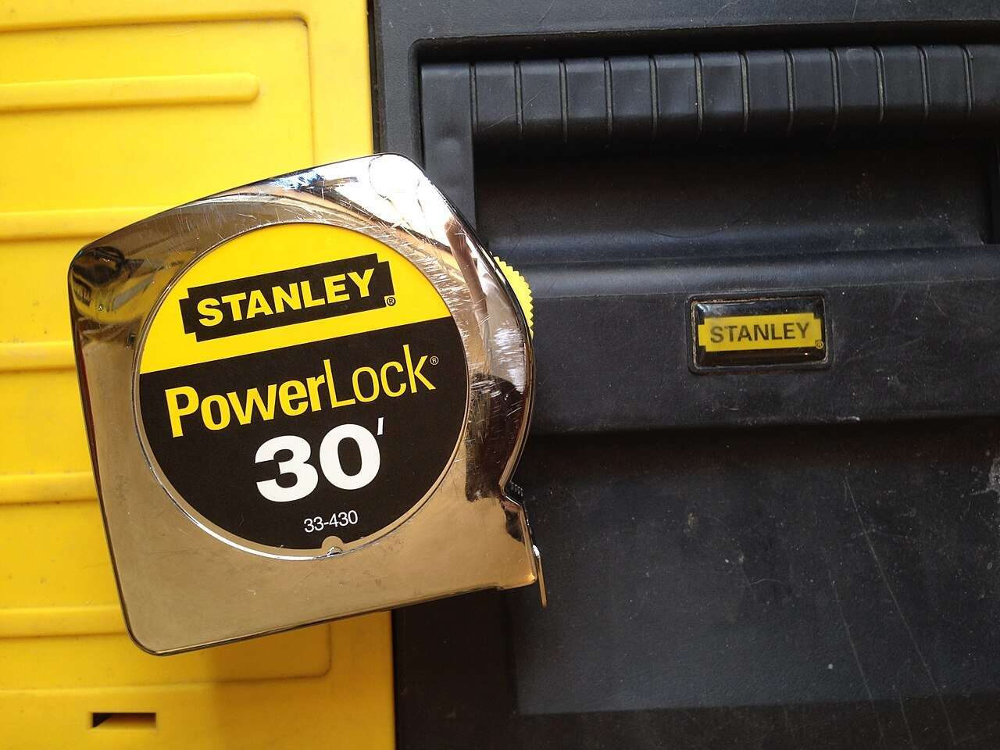

裝修報價單怎麼看？先搞懂這 5 件事

拿到裝修報價單，很多人只看最後一行的總價。總價當然重要，但日後會不會追加、會不會吵架，關鍵在總價「怎麼組成的」。以下 5 件事，簽約前逐項對照檢查。
1. 項目有沒有拆細
好的報價單會把工程拆成：拆除、水電、泥作、木作、油漆、系統櫃等類別，每類再列明細。最怕看到「木作工程 一式 350,000」這種寫法——「一式」代表沒人知道裡面包了什麼，日後對方說「這個不在一式裡面」你也無從反駁。要求對方把每一項的內容寫清楚，是屋主最基本的自保。
2. 單位與數量對不對
不同工程的計價單位不同，看錯單位就會誤判價格：
| 工程 | 常見單位 | 意思 |
|---|---|---|
| 油漆、泥作（貼磚） | 坪 | 以施工面積計價，先確認坪數怎麼量 |
| 木作櫃體、天花板 | 尺／坪 | 櫃體常用長度（尺），天花板用坪 |
| 水電配管、插座 | 迴路／組／點 | 一組迴路或一個出線點計價 |
| 拆除、清運 | 車／式 | 清運常以車次計，要問一車多大、包幾車 |
數量自己也要粗算一次：例如油漆坪數大約是室內地坪的 2.5～3 倍（牆面＋天花），數量差太多就要問清楚。
3. 材料品牌與型號有沒有寫明
「矽酸鈣板」「系統板材」只是材料大類，同類裡等級差很多。報價單上應該寫到品牌、系列或等級（例如板材的耐燃等級、五金的品牌）。寫得越具體，日後驗收越有依據；只寫大類，等於把選料的權力全部交給對方。
4. 付款比例合不合理
常見的分期方式是簽約、開工、階段驗收、完工驗收分段付，重點是「付款永遠不要跑在進度前面」。簽約金比例過高（例如一開口就要五成）就要特別小心；每一期付款前，先確認該階段的工程確實完成了再付。
5. 追加工程怎麼算，先講好
裝修做到一半發現要追加（例如拆開才發現管線老舊），是常態不是意外。簽約前先問清楚：追加工程的單價怎麼計算、追加前會不會先出書面報價經你同意才施工。原則是「沒簽認、不施工、不同意、不付錢」，口頭講好的一律請對方補上書面。
一句話總結：報價單的價值不在總價，在明細。拆得越細、寫得越清楚的報價單，日後越少爭議——這和價格高低無關，是做事方式的問題。
看完接著讀： 回居家裝修頻道 看其他篇：報價單、設計師、系統櫃、施工流程、合約，五篇一起看，裝修前功課就做滿了。